پاسخها بر اساس پاسخنامهی ارسالی بازنویسی شدهاند؛ تصویر متن اصلی هر پاسخ نیز درون همان پاسخ موجود است. تمام جوابها در ابتدا بستهاند.
پرسش ۱ — انتقال مشترک بردارهای مستقل
فرض کنید \(\{v_1,\ldots,v_m\}\subseteq V\) مستقل خطی است و \(w\in V\). ثابت کنید: \[ \dim\operatorname{span}(v_1+w,v_2+w,\ldots,v_m+w)\geq m-1. \]
نمایش پاسخ تشریحیپنهان کردن پاسخ
زیرفضای \(W=\operatorname{span}(v_1+w,\ldots,v_m+w)\) را تعریف میکنیم. چون \(W\) تحت تفاضل بسته است، برای هر \(i=2,\ldots,m\) داریم: \[ (v_i+w)-(v_1+w)=v_i-v_1\in W. \] نشان میدهیم این \(m-1\) بردار مستقلاند. فرض کنید: \[ \sum_{i=2}^{m}c_i(v_i-v_1)=0. \] با مرتب کردن جملهها: \[ -\left(\sum_{i=2}^{m}c_i\right)v_1+c_2v_2+\cdots+c_mv_m=0. \] از استقلال \(v_1,\ldots,v_m\)، تمام ضرایب صفرند؛ بهویژه \(c_2=\cdots=c_m=0\). بنابراین \(W\) شامل \(m-1\) بردار مستقل است و نتیجه میگیریم: \[ \boxed{\dim W\geq m-1.} \]
منبع: پاسخنامهی NHW2، صفحههای ۱. متن بالا بازنویسی آموزشی پاسخ است.
مشاهدهی تصویر اصل پاسخنامه
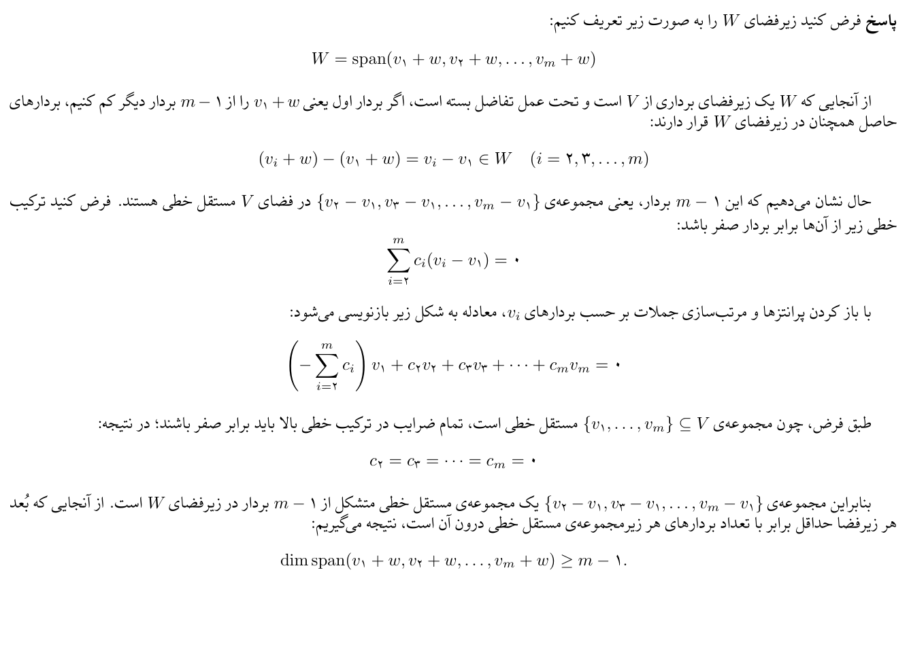
پرسش ۲ — پایه با مجموعهای تجمعی
فرض کنید \(\{\alpha_1,\alpha_2,\ldots,\alpha_n\}\) پایهای برای فضای برداری \(V\) باشد.
الف) نشان دهید که مجموعهی \[ \{\alpha_1,\alpha_1+\alpha_2,\alpha_1+\alpha_2+\alpha_3,\ldots,\alpha_1+\cdots+\alpha_n\} \] نیز پایهای برای \(V\) است.
ب) عکس گزارهی قسمت قبل را بررسی کنید. یعنی اگر مجموعهی \[ \{\alpha_1,\alpha_1+\alpha_2,\ldots,\alpha_1+\cdots+\alpha_n\} \] پایهای برای \(V\) باشد، آیا میتوان نتیجه گرفت که \(\{\alpha_1,\ldots,\alpha_n\}\) نیز پایهای برای \(V\) است؟
نمایش پاسخ تشریحیپنهان کردن پاسخ
الف) اثبات استقلال مجموعهی جدید. بگذارید \(\beta_j=\alpha_1+\cdots+\alpha_j\). چون \(\dim V=n\)، کافی است استقلال \(n\) بردار \(\beta_j\) را ثابت کنیم. فرض کنید: \[ c_1\alpha_1+c_2(\alpha_1+\alpha_2)+\cdots+c_n(\alpha_1+\cdots+\alpha_n)=0. \] با جمع جملههای همنوع: \[ (c_1+\cdots+c_n)\alpha_1+(c_2+\cdots+c_n)\alpha_2+\cdots+c_n\alpha_n=0. \] از استقلال پایهی اولیه: \[ \begin{cases}c_1+\cdots+c_n=0\\c_2+\cdots+c_n=0\\\vdots\\c_{n-1}+c_n=0\\c_n=0\end{cases} \] از پایین به بالا جایگذاری میکنیم؛ \(c_n=c_{n-1}=\cdots=c_1=0\). پس مجموعهی جدید مستقل است و چون \(n\) بردار دارد، پایه است.
ب) عکس گزاره نیز درست است. رابطهی معکوس بردارها عبارت است از: \[ \alpha_1=\beta_1,\qquad \alpha_k=\beta_k-\beta_{k-1}\quad(k\geq2). \] از طرفی هر \(\beta_j\) ترکیب خطی \(\alpha_i\)هاست؛ پس اگر \(\beta_j\)ها مولد \(V\) باشند، \(\alpha_i\)ها نیز مولد \(V\) هستند. برای استقلال فرض کنیم: \[ c_1\alpha_1+\cdots+c_n\alpha_n=0. \] با جایگذاری روابط معکوس: \[ (c_1-c_2)\beta_1+(c_2-c_3)\beta_2+\cdots+(c_{n-1}-c_n)\beta_{n-1}+c_n\beta_n=0. \] چون \(\beta_i\)ها مستقلاند، \(c_n=0\) و \(c_i-c_{i+1}=0\) برای \(1\leq i<n\). بنابراین بهترتیب همهی ضرایب صفر میشوند. در نتیجه \(\{\alpha_1,\ldots,\alpha_n\}\) نیز پایه است.
منبع: پاسخنامهی NHW2، صفحههای ۱، ۲، ۳. متن بالا بازنویسی آموزشی پاسخ است.
مشاهدهی تصویر اصل پاسخنامه
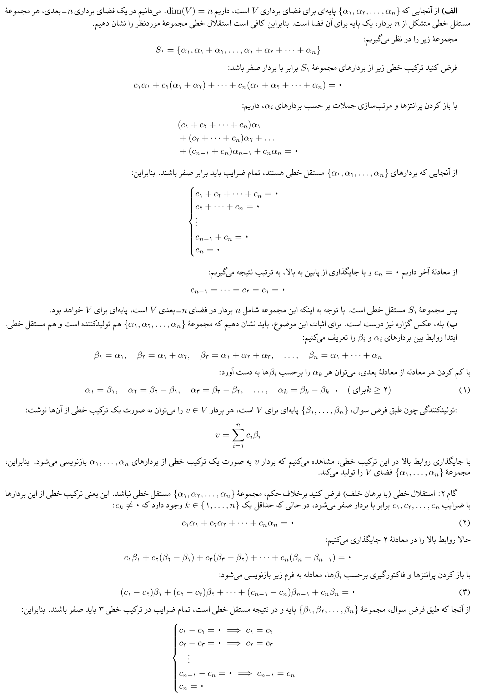
پرسش ۳ — پایه با جمع زوجهای متوالی و زوج یا فرد بودن n
فرض کنید \(n\geq2\) و مجموعهی \(\{\alpha_1,\alpha_2,\ldots,\alpha_n\}\) پایهای برای فضای برداری \(V\) باشد.
الف) بررسی کنید آیا مجموعهی \[ S_2=\{\alpha_1+\alpha_2,\alpha_2+\alpha_3,\ldots,\alpha_{n-1}+\alpha_n,\alpha_n+\alpha_1\} \] نیز پایهای برای \(V\) است. پاسخ خود را بر حسب زوج یا فرد بودن \(n\) بیان کنید.
ب) عکس گزارهی قسمت قبل را بررسی کنید. یعنی اگر مجموعهی \[ \{\alpha_1+\alpha_2,\alpha_2+\alpha_3,\ldots,\alpha_{n-1}+\alpha_n,\alpha_n+\alpha_1\} \] پایهای برای \(V\) باشد، آیا میتوان نتیجه گرفت که \(\{\alpha_1,\ldots,\alpha_n\}\) نیز پایهای برای \(V\) است؟
نمایش پاسخ تشریحیپنهان کردن پاسخ
الف) چون \(\dim V=n\)، استقلال \(S_2\) را بررسی میکنیم. فرض کنید: \[ \begin{aligned} &c_1(\alpha_1+\alpha_2)+c_2(\alpha_2+\alpha_3)+\cdots\\ &\quad+c_{n-1}(\alpha_{n-1}+\alpha_n)+c_n(\alpha_n+\alpha_1)=0. \end{aligned} \] از استقلال \(\alpha_i\)ها: \[ c_1+c_n=0,\qquad c_{i-1}+c_i=0\quad(2\leq i\leq n). \] پس \(c_i=(-1)^{i-1}c_1\) و با جایگذاری در رابطهی نخست: \[ (1+(-1)^{n-1})c_1=0. \] اگر \(n\) فرد باشد، \(n-1\) زوج است؛ بنابراین \(2c_1=0\) و روی \(\mathbb R\) (یا میدان با مشخصهی نابرابر ۲) تمام ضرایب صفرند. پس \(S_2\) پایه است.
اگر \(n\) زوج باشد، انتخاب \(c_1=1\) رابطهی وابستگی زیر را میدهد: \[ (\alpha_1+\alpha_2)-(\alpha_2+\alpha_3)+\cdots+(\alpha_{n-1}+\alpha_n)-(\alpha_n+\alpha_1)=0. \] بنابراین مجموعه وابسته است و پایه نیست. \[ \boxed{S_2\text{ is a basis }\iff n\text{ is odd}.} \] ب) طبق فرض بخش ب، \(S_2\) یک پایهی \(n\) عضوی است. هر بردار آن ترکیب خطی \(\alpha_i\)هاست؛ بنابراین: \[ V=\operatorname{span}(S_2)\subseteq\operatorname{span}(\alpha_1,\ldots,\alpha_n)\subseteq V. \] پس \(\alpha_i\)ها مولد \(V\) هستند. از آنجا که \(\dim V=n\)، این \(n\) بردار پایهاند. بهعلاوه در حالت زوج، رابطهی متناوب بالا همیشه وجود دارد و فرض پایه بودن فهرست \(S_2\) امکانپذیر نیست.
نکتهی تکمیلی: در قسمت ب، همان قرارداد پاسخنامه را داریم که پایهی مطرحشده یک فهرست \(n\) عضوی است؛ در صورت حذف بردارهای تکراری از یک مجموعه و بدون فرض بُعد، باید این موضوع را جداگانه بررسی کرد.
منبع: پاسخنامهی NHW2، صفحههای ۳، ۴. متن بالا بازنویسی آموزشی پاسخ است.
مشاهدهی تصویر اصل پاسخنامه
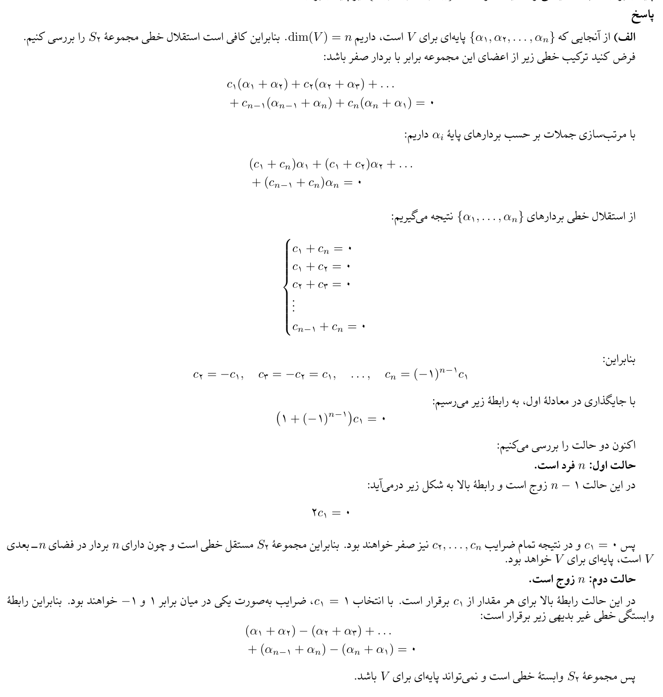
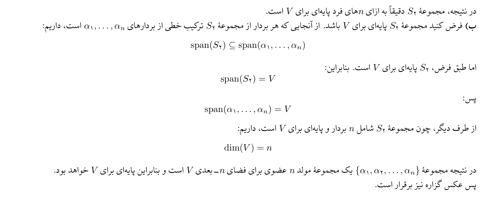
پرسش ۴ — آیا هر پایهی زیرفضا زیرمجموعهای از پایهی دادهشده است؟
فرض کنید \(v_1,v_2,v_3,v_4\) پایهای برای فضای برداری \(\mathbb R^4\) باشند و \(W\) زیرفضایی از \(\mathbb R^4\) باشد. آیا همواره زیرمجموعهای از مجموعهی \(\{v_1,v_2,v_3,v_4\}\) وجود دارد که پایهای برای \(W\) باشد؟
نمایش پاسخ تشریحیپنهان کردن پاسخ
خیر. برای رد گزاره یک مثال نقض کافی است. پایهی استاندارد \(\mathbb R^4\) را انتخاب میکنیم: \[ v_1=e_1=\begin{bmatrix}1\\0\\0\\0\end{bmatrix},\quad v_2=e_2=\begin{bmatrix}0\\1\\0\\0\end{bmatrix},\quad v_3=e_3=\begin{bmatrix}0\\0\\1\\0\end{bmatrix},\quad v_4=e_4=\begin{bmatrix}0\\0\\0\\1\end{bmatrix}. \] زیرفضای یکبُعدی \(W=\operatorname{span}(e_1+e_2)\) را در نظر بگیرید: \[ W=\left\{\begin{bmatrix}c\\c\\0\\0\end{bmatrix}:c\in\mathbb R\right\}. \] هیچیک از \(e_1,e_2,e_3,e_4\) در \(W\) نیست. زیرا دو مؤلفهی اول بردارهای \(W\) برابر و دو مؤلفهی آخر صفرند؛ هیچ بردار پایهی استاندارد هر دو شرط را ندارد.
از آنجا که \(\dim W=1\)، پایهی آن باید یک بردار ناصفر از خود \(W\) داشته باشد. بنابراین هیچ زیرمجموعهای از پایهی دادهشده پایهی \(W\) نیست.
منبع: پاسخنامهی NHW2، صفحههای ۴. متن بالا بازنویسی آموزشی پاسخ است.
مشاهدهی تصویر اصل پاسخنامه
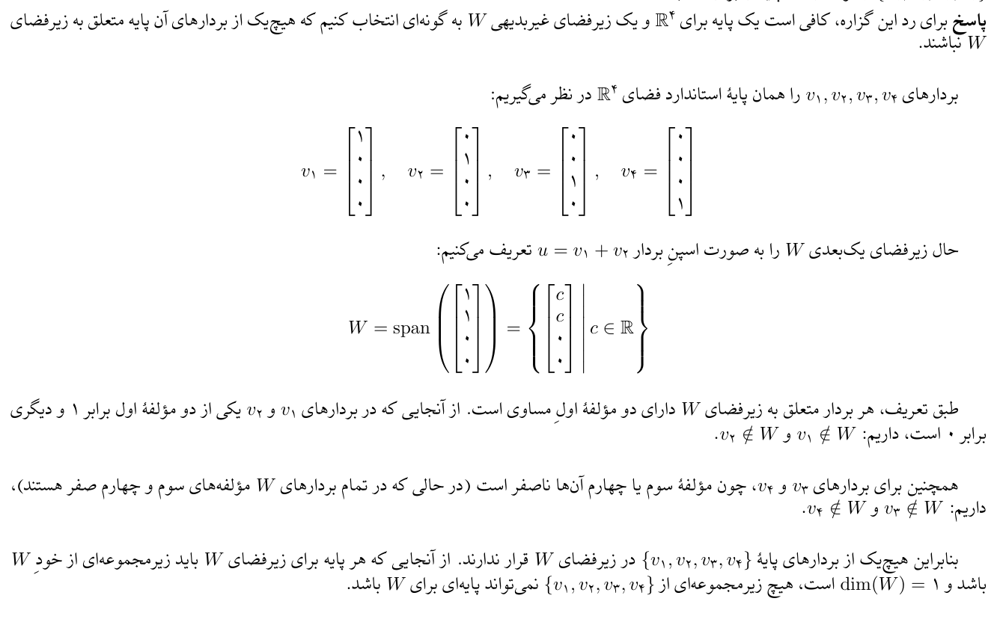
پرسش ۵ — اشتراک ناصفر چند زیرفضا
فرض کنید \(W_1,W_2,\ldots,W_m\) زیرفضاهای دلخواه از \(V\) (با \(\dim V=n\)) باشند بهطوری که: \[ \dim(W_1)+\dim(W_2)+\cdots+\dim(W_m)>n(m-1). \] ثابت کنید تقاطع همهی آنها شامل حداقل یک بردار ناصفر مشترک است: \[ \bigcap_{i=1}^{m}W_i\ne\{0\}. \] راهنمایی: ابتدا با استقرای ریاضی نشان دهید که: \[ \dim\left(\bigcap_{i=1}^{m}W_i\right)\geq\sum_{i=1}^{m}\dim(W_i)-n(m-1). \]
نمایش پاسخ تشریحیپنهان کردن پاسخ
ابتدا نامساوی راهنمایی را با استقرا ثابت میکنیم.
پایهی استقرا: برای \(m=1\)، تساوی برقرار است. همچنین برای دو زیرفضا طبق فرمول بُعد: \[ \dim(W_1\cap W_2)=\dim W_1+\dim W_2-\dim(W_1+W_2)\geq\dim W_1+\dim W_2-n. \] فرض استقرا: برای \(m-1\) زیرفضا نامساوی درست است. بگذارید \[ U=\bigcap_{i=1}^{m-1}W_i. \] از نامساوی دو زیرفضا و فرض استقرا داریم: \[ \begin{aligned} \dim(U\cap W_m)&\geq\dim U+\dim W_m-n\\ &\geq\sum_{i=1}^{m-1}\dim W_i-n(m-2)+\dim W_m-n\\ &=\sum_{i=1}^{m}\dim W_i-n(m-1). \end{aligned} \] پس نامساوی برای همهی \(m\geq1\) ثابت شد.
حال فرض مسئله میگوید طرف راست اکیداً مثبت است. بنابراین: \[ \dim\left(\bigcap_{i=1}^{m}W_i\right)>0. \] چون تنها زیرفضای صفربُعدی \(\{0\}\) است، اشتراک شامل یک بردار ناصفر است و نتیجه ثابت میشود.
منبع: پاسخنامهی NHW2، صفحههای ۵. متن بالا بازنویسی آموزشی پاسخ است.
مشاهدهی تصویر اصل پاسخنامه
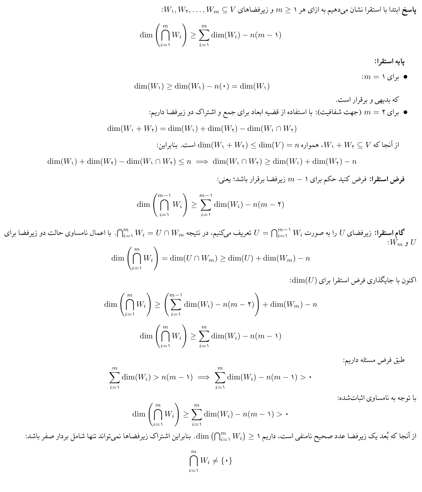
پرسش ۶ — حاصلضرب صفر و مجموع رتبهها
فرض کنید \(A,B\in M_n(\mathbb C)\) باشند. نشان دهید که اگر \(AB=0\) باشد، آنگاه: \[ \operatorname{rank}(A)+\operatorname{rank}(B)\leq n. \]
نمایش پاسخ تشریحیپنهان کردن پاسخ
از \(AB=0\)، برای هر \(x\in\mathbb C^n\) داریم: \[ A(Bx)=0. \] پس هر عضو فضای ستونی \(B\) در فضای پوچ \(A\) قرار دارد: \[ C(B)\subseteq N(A). \] در نتیجه: \[ \operatorname{rank}(B)=\dim C(B)\leq\dim N(A)=n-\operatorname{rank}(A), \] که در تساوی آخر از قضیهی رتبه و پوچی استفاده کردیم. با انتقال جملهها: \[ \boxed{\operatorname{rank}(A)+\operatorname{rank}(B)\leq n.} \]
منبع: پاسخنامهی NHW2، صفحههای ۵، ۶. متن بالا بازنویسی آموزشی پاسخ است.
مشاهدهی تصویر اصل پاسخنامه
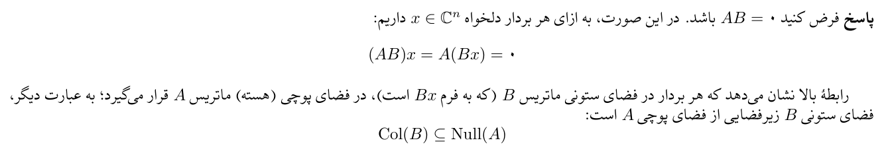
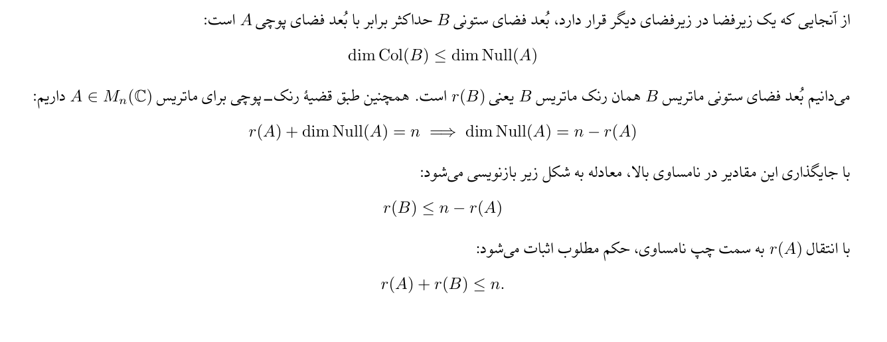
پرسش ۷ — نامساوی سیلوستر برای رتبهی حاصلضرب
فرض کنید \(A\in\mathbb F^{m\times n}\) و \(B\in\mathbb F^{n\times p}\) دو ماتریس باشند. نشان دهید: \[ \operatorname{rank}(AB)\geq\operatorname{rank}(A)+\operatorname{rank}(B)-n. \]
نمایش پاسخ تشریحیپنهان کردن پاسخ
از قضیهی رتبه و پوچی داریم: \[ \dim N(A)=n-\operatorname{rank}(A),\quad\dim N(B)=p-\operatorname{rank}(B),\quad\dim N(AB)=p-\operatorname{rank}(AB). \] همواره \(N(B)\subseteq N(AB)\)، زیرا \(Bx=0\Rightarrow ABx=0\).
پایهای \(\{u_1,\ldots,u_t\}\) از \(N(B)\) انتخاب میکنیم و آن را به پایهی \(N(AB)\) گسترش میدهیم: \[ \{u_1,\ldots,u_t,v_1,\ldots,v_k\},\qquad k=\dim N(AB)-\dim N(B). \] برای هر \(j\)، چون \(v_j\in N(AB)\)، داریم \(Bv_j\in N(A)\). نشان میدهیم \(Bv_1,\ldots,Bv_k\) مستقلاند. اگر \[ \sum_{j=1}^{k}c_jBv_j=0, \] آنگاه \(\sum_j c_jv_j\in N(B)\). پس برای ضرایبی \(d_i\) داریم: \[ \sum_{j=1}^{k}c_jv_j=\sum_{i=1}^{t}d_iu_i. \] استقلال پایهی گسترشیافتهی \(N(AB)\) نتیجه میدهد همهی \(c_j\)ها صفرند. بنابراین \(k\) بردار مستقل در \(N(A)\) داریم و: \[ k=\dim N(AB)-\dim N(B)\leq\dim N(A). \] با جایگذاری ابعاد: \[ [p-\operatorname{rank}(AB)]-[p-\operatorname{rank}(B)]\leq n-\operatorname{rank}(A). \] با مرتب کردن: \[ \boxed{\operatorname{rank}(AB)\geq\operatorname{rank}(A)+\operatorname{rank}(B)-n.} \]
منبع: پاسخنامهی NHW2، صفحههای ۶، ۷. متن بالا بازنویسی آموزشی پاسخ است.
مشاهدهی تصویر اصل پاسخنامه
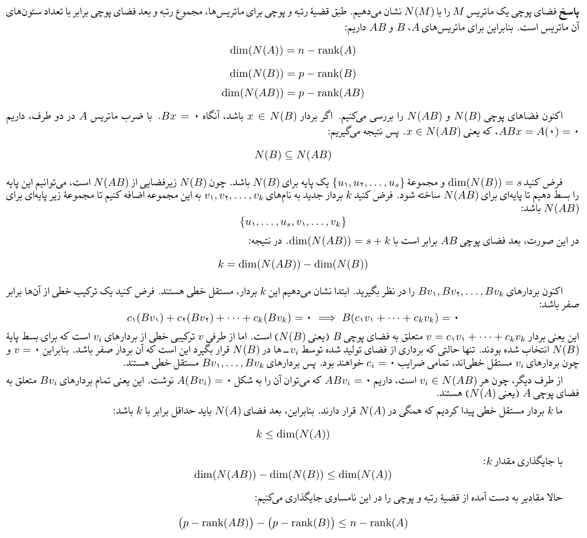
پرسش ۸ — رتبهی چند ماتریس با حاصلضرب صفر
فرض کنید \(A_1,A_2,\ldots,A_k\) ماتریسهایی از ابعاد \(n\times n\) باشند. اگر \(A_1A_2\cdots A_k=0\) باشد، نشان دهید که: \[ \operatorname{rank}(A_1)+\cdots+\operatorname{rank}(A_k)\leq(k-1)n. \]
نمایش پاسخ تشریحیپنهان کردن پاسخ
از نامساوی سیلوستر در سؤال ۷ میدانیم برای دو ماتریس مربع \(X,Y\) با اندازهی \(n\): \[ \operatorname{rank}(XY)\geq\operatorname{rank}(X)+\operatorname{rank}(Y)-n. \] با استقرا نشان میدهیم: \[ \operatorname{rank}(A_1\cdots A_k)\geq\sum_{i=1}^{k}\operatorname{rank}(A_i)-(k-1)n. \] برای \(k=2\) همین نامساوی سیلوستر است (برای \(k=1\) تساوی است). فرض کنید برای \(k-1\) درست باشد. آنگاه: \[ \begin{aligned} \operatorname{rank}(A_1\cdots A_k)&\geq\operatorname{rank}(A_1\cdots A_{k-1})+\operatorname{rank}(A_k)-n\\ &\geq\sum_{i=1}^{k-1}\operatorname{rank}(A_i)-(k-2)n+\operatorname{rank}(A_k)-n\\ &=\sum_{i=1}^{k}\operatorname{rank}(A_i)-(k-1)n. \end{aligned} \] با توجه به فرض \(A_1\cdots A_k=0\)، طرف چپ صفر است. بنابراین: \[ \boxed{\sum_{i=1}^{k}\operatorname{rank}(A_i)\leq(k-1)n.} \]
منبع: پاسخنامهی NHW2، صفحههای ۷. متن بالا بازنویسی آموزشی پاسخ است.
مشاهدهی تصویر اصل پاسخنامه
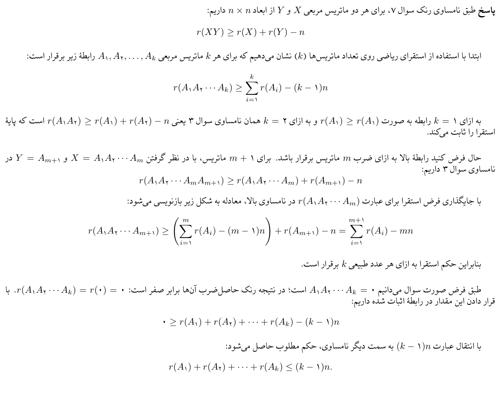
پرسش ۹ — ناصفر بودن توانی از ماتریس فاقد رتبهی کامل
فرض کنید \(A\in\mathbb R^{n\times n}\) ماتریسی باشد که رتبهی کامل (full rank) ندارد. ثابت کنید: \[ A^{\left\lfloor\frac{n-1}{n-\operatorname{rank}(A)}\right\rfloor}\ne0. \]
نمایش پاسخ تشریحیپنهان کردن پاسخ
بگذارید \(d=n-\operatorname{rank}(A)\) (پوچی ماتریس) و \(k=\left\lfloor\frac{n-1}{d}\right\rfloor\). چون \(A\) رتبهی کامل ندارد، \(d\geq1\).
اگر \(k=0\)، آنگاه \(A^k=I_n\ne0\) (برای \(n\geq1\)).
اگر \(k\geq1\)، با نامساوی سیلوستر برای \(X=A^{j-1}\) و \(Y=A\) داریم: \[ \operatorname{rank}(A^j)\geq\operatorname{rank}(A^{j-1})+\operatorname{rank}(A)-n=\operatorname{rank}(A^{j-1})-d. \] از آنجا که \(\operatorname{rank}(I_n)=n\)، با تکرار رابطه یا استقرا به دست میآید: \[ \operatorname{rank}(A^k)\geq n-kd. \] طبق تعریف جزء صحیح: \[ k\leq\frac{n-1}{d}\quad\Longrightarrow\quad kd\leq n-1. \] پس: \[ \operatorname{rank}(A^k)\geq n-kd\geq1. \] بنابراین \(A^k\ne0\). نتیجهی موردنظر ثابت شد: \[ \boxed{A^{\lfloor(n-1)/(n-\operatorname{rank}(A))\rfloor}\ne0.} \]
منبع: پاسخنامهی NHW2، صفحههای ۷، ۸. متن بالا بازنویسی آموزشی پاسخ است.
مشاهدهی تصویر اصل پاسخنامه
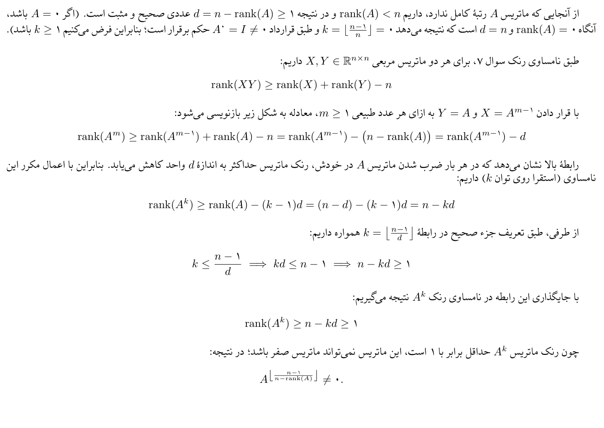
پرسش ۱۰ — تغییر یک درایه و افزایش رتبه
(آ) فرض کنید یک درایه از یک ماتریس تغییر کند. ثابت کنید که رتبهی ماتریس حداکثر به اندازهی ۱ واحد تغییر میکند.
(ب) فرض کنید \(A\in\mathbb R^{n\times n}\) ماتریسی با \(\operatorname{rank}(A)=n-1\) باشد. ثابت کنید که میتوان تنها با تغییر دادن یک درایه، ماتریس \(A\) را به ماتریسی با رتبهی کامل (full rank) تبدیل کرد.
نمایش پاسخ تشریحیپنهان کردن پاسخ
(آ) اگر \(B\) از تغییر تنها درایهی \((i,j)\) ماتریس \(A\) به دست آمده باشد، داریم: \[ B=A+E,\qquad E=\delta e_ie_j^T. \] ماتریس \(E\) حداکثر رتبهی ۱ دارد، زیرا فقط یک درایهی احتمالاً ناصفر دارد. از نامساوی رتبهی جمع: \[ \operatorname{rank}(B)\leq\operatorname{rank}(A)+\operatorname{rank}(E)\leq\operatorname{rank}(A)+1. \] همچنین از \(A=B-E\): \[ \operatorname{rank}(A)\leq\operatorname{rank}(B)+1. \] پس: \[ \boxed{|\operatorname{rank}(B)-\operatorname{rank}(A)|\leq1.} \] (ب) ستونهای \(A\) را با \(a_1,\ldots,a_n\) نشان میدهیم. فضای ستونی \[ W=\operatorname{span}(a_1,\ldots,a_n),\qquad\dim W=n-1 \] است. میتوان \(n-1\) ستون مستقل را انتخاب کرد. بگذارید \(j\) اندیس ستونی باشد که در این پایه نیست. آنگاه: \[ W=\operatorname{span}\{a_1,\ldots,a_{j-1},a_{j+1},\ldots,a_n\}. \] چون \(W\) زیرفضای حقیقی \(\mathbb R^n\) است، حداقل یکی از بردارهای استاندارد، مثلاً \(e_i\)، خارج از \(W\) است؛ وگرنه تمام \(\mathbb R^n\) را میپوشاند.
تنها درایهی \((i,j)\) را یک واحد افزایش میدهیم. ستون جدید: \[ a'_j=a_j+e_i. \] اگر \(a'_j\in W\) باشد، چون \(a_j\in W\) و \(W\) تحت تفاضل بسته است، نتیجه میگیریم \(e_i=a'_j-a_j\in W\)، که تناقض است. پس \(a'_j\notin W\).
بنابراین با اضافه شدن \(a'_j\) به آن \(n-1\) ستون مستقل، \(n\) ستون مستقل به دست میآید. به بیان مستقیم اگر \[ \sum_{k\ne j}c_ka_k+c_ja'_j=0, \] و \(c_j\ne0\)، آنگاه \(a'_j\) ترکیب خطی ستونهای دیگر و عضو \(W\) میشود؛ تناقض. پس \(c_j=0\) و از استقلال ستونهای دیگر همهی ضرایب صفرند. \[ \boxed{\operatorname{rank}(A')=n.} \]
منبع: پاسخنامهی NHW2، صفحههای ۸، ۹، ۱۰. متن بالا بازنویسی آموزشی پاسخ است.
مشاهدهی تصویر اصل پاسخنامه
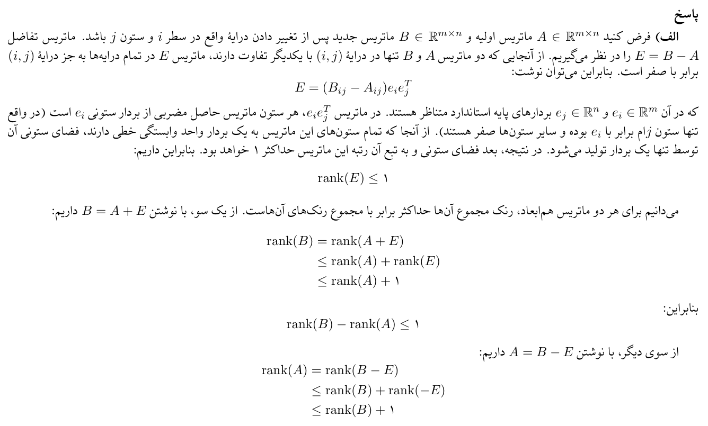
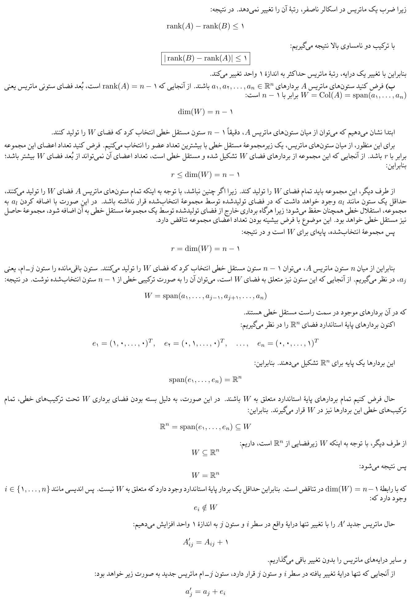
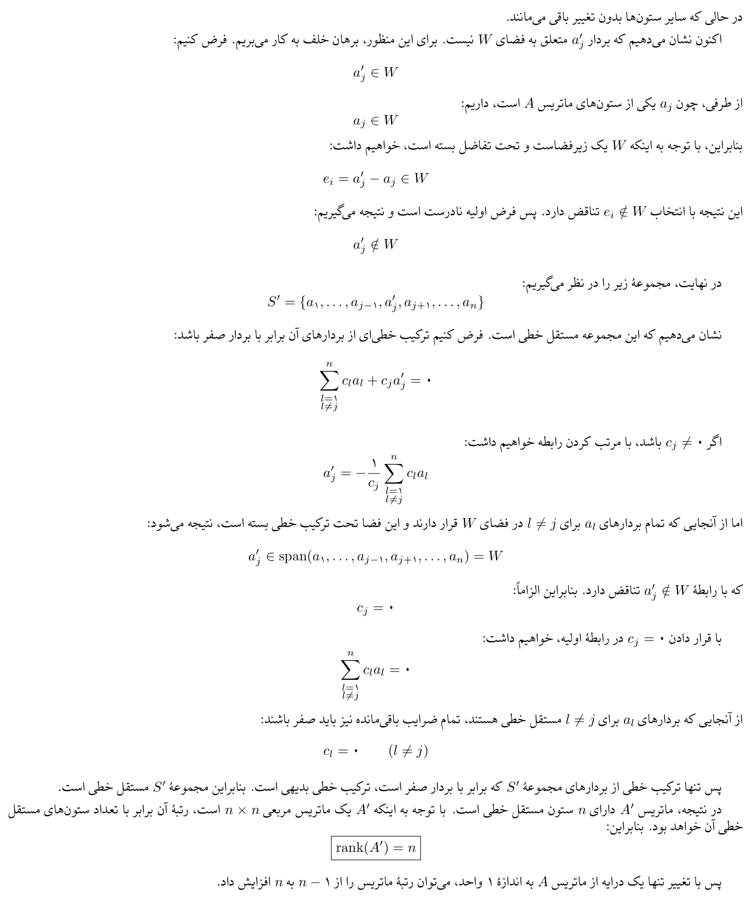